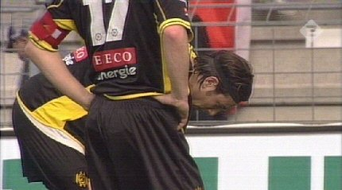

|
RKC - Roda JC (1-0) 10 april 2005 |

De ee-side ziet een schamel opgekomen
Rodapubliek. Dit heeft vooral te
maken met het merkwaardige besluit een verplichte bus-combi af te
kondigen voor deze wedstrijd.
RKC -
Roda JC (1-0) 10 april 2005
De ee-side ziet een schamel opgekomen
Rodapubliek. Dit heeft vooral te
maken met het merkwaardige besluit een verplichte bus-combi af te
kondigen voor deze wedstrijd.
Spectaculaire overtreding op Colinet die onbestraft blijft.
Een uitstekende kans voor Cissé wordt knap verijdeld door Sinouh.

Koné kopt in het zijnet, Kah schiet over Bodor stuit op Sinouh en
zo mist
Roda nog enkele leuke kansen in de eerste helft.
Ook in de tweede helft zijn de betere kansen voor Roda, maar Koné
faalt
twee keer in zeer kansrijke positie.
Cissé verdedigt slecht waarna Jason Oost
de bal vrij gemakkelijk kan
inschieten: 1-0, (67').

Verslagenheid bij Ivan Vicelich en Gregoor van Dijk.
Roda is dit weekend beroofd van de allerlaatste mogelijkheid om
op eigen
kracht Europees voetbal af te dwingen. Omdat Heerenveen van Twente won
is de deur naar vlucht-optie Intertoto ook verder dichtgeworpen. De Friezen
staan flink los van Roda en zullen als ze zich niet via de competitie voor
Europees voetbal plaatsen als enige Nederlandse ploeg mee mogen doen
aan Intertoto. Roda is dus nu afhankelijk van SC Heerenveen !!